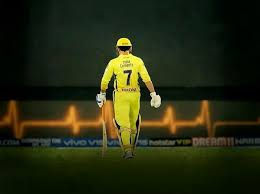

Mahendra Singh Dhoni (born 7 July 1981), commonly known as M. S. Dhoni and *Mahi*, is a cricket player and was the former captain of the Indian cricket team. Dhoni is a right-handed batsman. He is known as the greatest captain of all time, having achieved more success than any other captain in the history of cricket.
